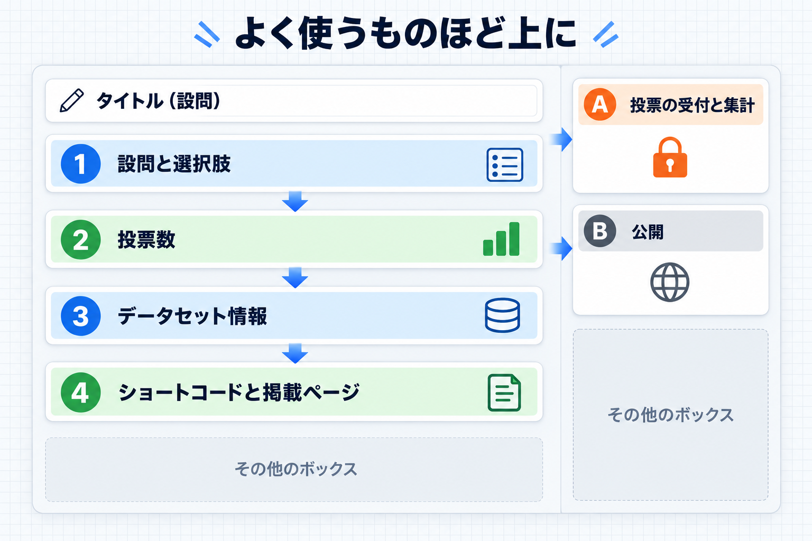
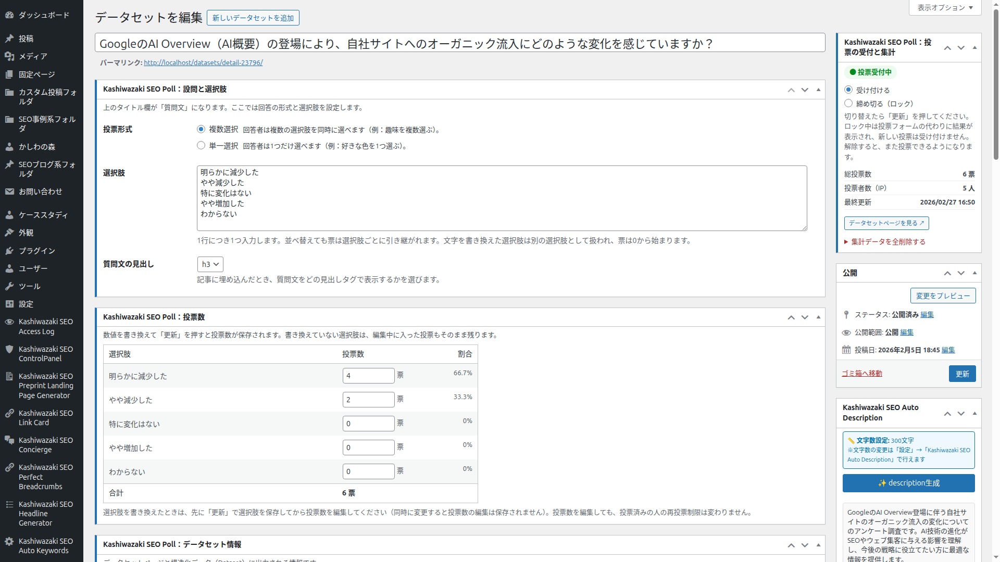
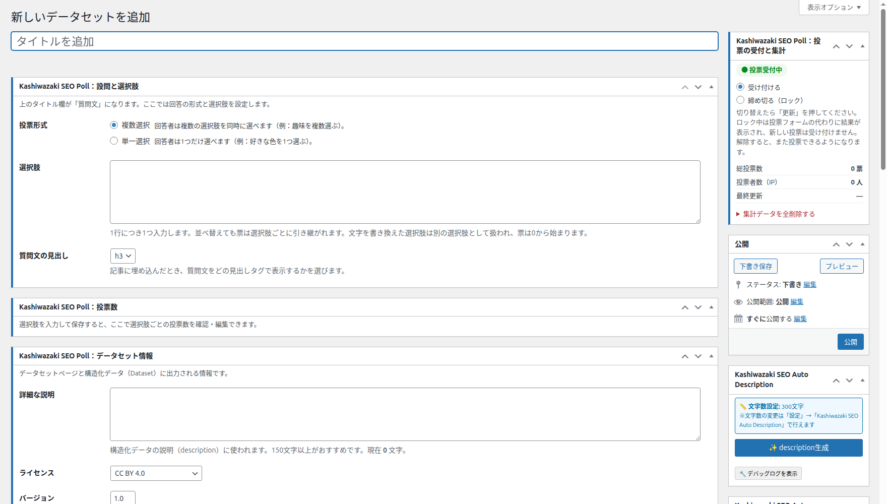
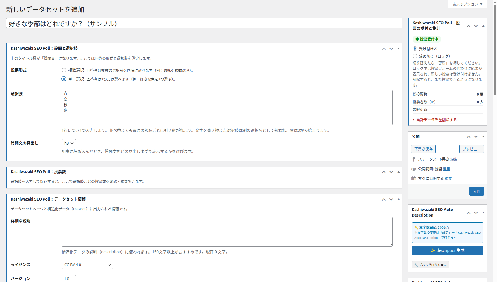
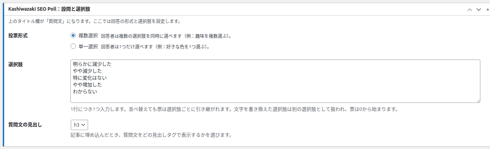
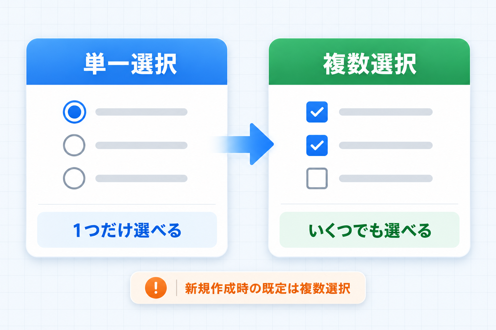

データセットの作成
新しい投票（データセット）を作る画面と、作ったデータセットを直す編集画面の説明です。このページでは画面全体の配置と、いちばん上の「設問と選択肢」を説明します。
編集画面の配置
このプラグインの入力欄は、タイトル欄のすぐ下と右側の列のいちばん上にまとめて置かれます。よく使うものほど上にあるため、画面を下までスクロールしなくても主な操作ができます。


| 位置 | ボックス | 説明しているページ |
|---|---|---|
| 上部 | タイトル欄（設問） | このページ |
| タイトルの下 1 | Kashiwazaki SEO Poll：設問と選択肢 | このページ |
| タイトルの下 2 | Kashiwazaki SEO Poll：投票数 | 投票数の確認と編集 |
| タイトルの下 3 | Kashiwazaki SEO Poll：データセット情報 | データセット情報 |
| タイトルの下 4 | Kashiwazaki SEO Poll：ショートコードと掲載ページ | ショートコードと掲載ページ |
| 右列のいちばん上 | Kashiwazaki SEO Poll：投票の受付と集計 | 投票の受付と締め切り |
| 右列の2番目 | 公開（WordPress 標準） | このページ |
| 右列の下のほう | 投稿者（WordPress 標準）、他のプラグインのボックス | — |
ボックスの位置は固定です
このプラグインのボックスはドラッグで動かしても保存されず、次に開いたときは上の位置に戻ります。他のプラグインのボックスは、その下に表示されます。本文を書く欄はありません（タイトルと投稿者だけを使います）。
新規追加画面
一覧の「新しいデータセットを追加」を押すと開きます。最初は「投票数」ボックスに「選択肢を入力して保存すると、ここで選択肢ごとの投票数を確認・編集できます。」とだけ表示されます。


タイトル欄（設問）
タイトル欄に書いた文が、投票フォームに表示される「設問」になります。データセットの名前としても、一覧・データセットページ・データファイル・構造化データで使われます。
| 項目 | 内容 |
|---|---|
| 入力形式 | テキスト（1行） |
| 既定値 | 空 |
| 例 | 好きな季節はどれですか？ |
| パーマリンク | 公開後のデータセットページの URL は /datasets/detail-（番号）/ です。番号は WordPress がデータセットごとに付ける番号で、タイトルを変えても変わりません |
おすすめ
設問は「〜はどれですか？」のように、答え方が分かる疑問文にすると回答しやすくなります。
ボックス「設問と選択肢」
ボックスの冒頭に「上のタイトル欄が「質問文」になります。ここでは回答の形式と選択肢を設定します。」と表示されます。

投票形式
回答者がいくつ選べるかを決めます。

| 選択肢 | 画面の説明 | 記事での表示 | 票の数え方 |
|---|---|---|---|
| 複数選択（既定） | 回答者は複数の選択肢を同時に選べます（例：趣味を複数選ぶ）。 | 四角いチェックボックス | 選んだ選択肢それぞれに1票。総投票数は延べ票数になり、投票した人数より多くなります |
| 単一選択 | 回答者は1つだけ選べます（例：好きな色を1つ選ぶ）。 | 丸いラジオボタン | 選んだ1つに1票。総投票数は通常、投票した人数と同じです（投票数を手で直した場合や、複数選択から切り替えた場合は一致しません） |
途中で切り替えた場合
投票形式は後から変えられます。それまでの票はそのまま残ります。単一選択に変えると、以後は2つ以上を同時に投票できなくなります。
選択肢
画面の説明: 「1行につき1つ入力します。並べ替えても票は選択肢ごとに引き継がれます。文字を書き換えた選択肢は別の選択肢として扱われ、票は0から始まります。」
| 操作 | 票はどうなるか |
|---|---|
| 行を並べ替える | 票は同じ文字の選択肢に付いたまま移動します |
| 選択肢を追加する | 追加した選択肢は0票から始まります |
| 選択肢の文字を書き換える | 別の選択肢として扱われ、0票から始まります。元の選択肢の票は消えます |
| 選択肢を削除する | その選択肢の票は消えます |
| 同じ文字の選択肢を2行書く | 保存すると1つにまとめられます（票はそのまま残ります） |
- 空の行は無視され、行の前後の空白は取り除かれます。
- HTML のタグは使えません（取り除かれます）。
- 選択肢の数に上限・下限はありません。選択肢が1つも無いまま公開すると、記事には「選択肢がありません。」と表示されます。
投票が始まった後の書き換えに注意
誤字を直すつもりで選択肢の文字を変えても、別の選択肢として扱われ、票は0に戻ります。票を残したまま直したい場合は、書き換えて保存した後、「投票数」ボックスで票数を入力し直してください（投票数の確認と編集）。
質問文の見出し
画面の説明: 「記事に埋め込んだとき、質問文をどの見出しタグで表示するかを選びます。」
| 項目 | 内容 |
|---|---|
| 選択肢 | h1・h2・h3・h4・h5・h6 |
| 既定値 | h3 |
| 効く場所 | 記事の投票フォームの設問。受付を締め切っている間は設問の見出し自体を表示しないため、この設定は使われません |
おすすめの設定
記事の見出し構成に合わせます。記事の本文が h2 の章立てなら、その中に置く投票は h3 にすると見出しの順序が自然になります。
公開ボックス
「下書きとして保存」「プレビュー」「公開」（公開後は「更新」）などは WordPress 標準の機能です。このプラグインの入力内容は、これらのボタンを押したときに一緒に保存されます。
| 状態 | 記事の投票フォーム | データセットページ |
|---|---|---|
| 公開 | 表示される | 表示される |
| 下書き・レビュー待ち・非公開・予約 | 「データが見つかりません。」と表示 | 表示されない |
| ゴミ箱 | 「データが見つかりません。」と表示 | 表示されない |
| 公開（パスワード保護） | 「データが見つかりません。」と表示 | 詳細ページはパスワードの入力欄だけを表示。一覧・形式別ページ・データファイル・サイトマップには出さない |
公開・非公開とデータファイル
公開すると、その時点の集計でデータファイル（CSV など）が自動で作られ、サイトマップにも載ります。下書き・非公開・ゴミ箱に戻すと、データファイルは自動で削除され、サイトマップからも外れます。
保存したときに出るメッセージ
保存すると、WordPress 標準の更新メッセージが出ます。投票数を書き換えた場合や集計データを削除した場合は、このプラグインのメッセージも出ます。一覧は 投票数の確認と編集 と 投票の受付と締め切り にあります。
よくある使い方
はじめての投票を作る
タイトル欄に設問を書く。
「投票形式」を選び、「選択肢」に1行ずつ入力する。
必要なら「データセット情報」に説明を書く（データセット情報）。
「公開」を押し、「ショートコードと掲載ページ」の「コピー」で記事に貼る。